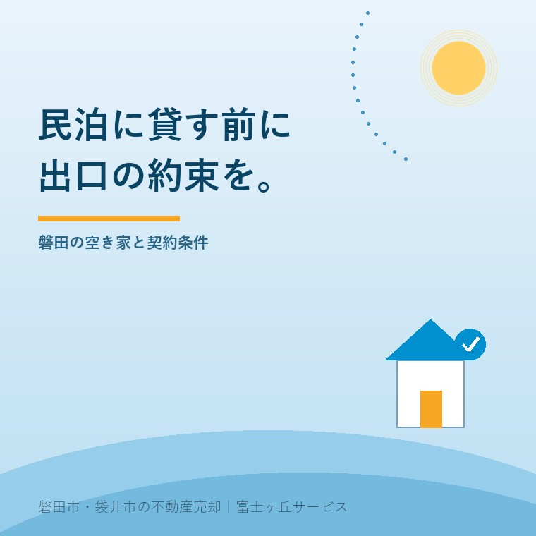
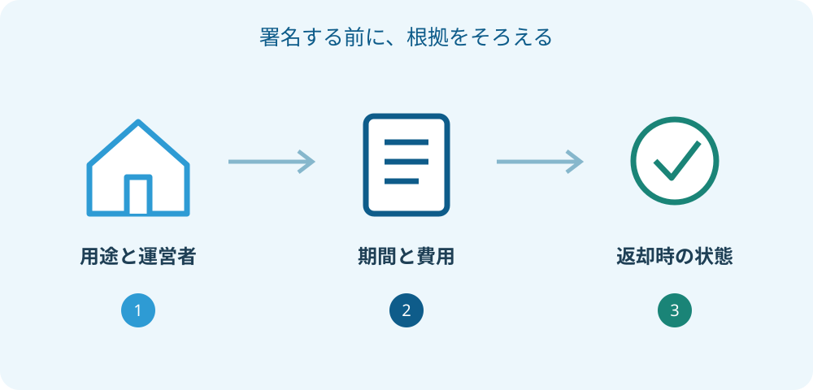

磐田市の空き家民泊、貸す前に確認する契約条件
2026年9月26日｜カテゴリ：空き家活用・賃貸契約

この記事の要点
Q. 空いた実家を民泊に貸せば、管理も費用も任せられますか？
運営を任せることと、所有者の負担がなくなることは別です。用途、期間、修繕費、返却時の状態、事故対応を契約書で確認します。磐田市の募集済み事業を現在の募集と取り違えないでください。富士ヶ丘サービスのような地域密着の会社に相談するという選択肢もあります。
大石浩之（磐田市／不動産業）です。宅地建物取引士として、空き家を貸す入口より、返してもらう出口を先に見ます。民泊で家が使われることには期待があります。ただ、空いた実家の心配が、賃貸借契約を結んだ日に全部消えるわけではありません。
磐田市の民泊活用は、現在の募集状況から確かめる
磐田市の「地域おこし協力隊（空き家担当）」は、2026年6月29日更新の案内です。2026年9月26日に確認したページでは、民泊活用の募集開始は完了と表示されています。この記事は、新しい応募募集のお知らせではありません。
市の説明では、隊員が市内の空き家を1件程度選び、民泊用に改修して運営する仕組みです。選定では実施可能な場所か、改修費や借りる期間が適当かなどを確認します。希望する家なら一律に借りてもらえる制度とは読めません。
以前の募集資料にあった個別の賃貸条件を、別の民間運営者との契約へそのまま移すこともできません。募集時の資料と、実際に署名する契約書は区別します。今回、以前の募集要項PDFは現行URLから取得できなかったため、期間の終期や費用分担を現在の確定条件として掲載していません。
市の活動の入口を知るには、かけラボと空き家相談の整理も使えます。ただし相談に行くこと、物件の調査を受けること、貸す契約をすることは、それぞれ別の段階です。初回相談で貸す約束まで求められたら、持ち帰って書面を読みます。
良い点は、使い道と担当者を具体的に話せること
空き家民泊の良い点は、単に「何かに使えないか」で止まらず、運営者と使い方を具体的に相談できることだと私は考えます。台所をどう使うか、宿泊者がどこから入るか、清掃を誰が担うかまで話せれば、所有者も判断しやすくなります。
貸主が宿泊予約や毎回の清掃を直接引き受けず、運営する人と役割を分ける選択もあります。家を残したい気持ちと、日々の作業を続けられるかという問題を、別々に検討できる点には意味があります。これは契約に役割が書かれている場合の評価です。
私は、すぐに解体するか残すかの二択にしない姿勢にも賛成です。普通の住まいとしての賃貸と、民泊に使うための賃貸では準備が違います。実家を貸す選択肢を並べ、建物を使える状態へ戻す費用と、ご家族が引き受けられる手間を比べます。
ただ、実家の改修費が見えない段階では、私は民泊が最善だと決められません。借り手の熱意があっても、雨漏りや設備の更新費が賃料を上回る可能性は残ります。期待を否定するためではなく、続けられる約束にするために、見積りを先に見たいのです。
注文したいのは、貸す期間と返却の条件を一枚にすること
空き家を貸す契約では、契約開始日だけでなく、終了の方法と返却時の状態を同じ紙で確認できる形にしてほしいと私は考えます。年額の賃料だけが大きく書かれ、途中で終わる場合の話が小さいままでは、持ち主が比較できません。
| 契約前に見る項目 | 私が書面で確認したい内容 |
|---|---|
| 期間 | 始期・終期、更新や再契約の扱い、終了の連絡時期 |
| 用途 | 誰が、どの方式で宿泊事業を行うか。別用途への変更条件 |
| 改修 | 工事図面、見積り、所有者の承諾が必要な範囲 |
| 費用 | 税・保険・修繕・光熱水費の負担者、立替え精算の方法 |
| 返却 | 残す設備、撤去する家具、鍵の返却と現地確認の方法 |
この表は市が定めた統一条件ではなく、私の確認用メモです。「運営に必要な改修をする」という一行から、壁を抜くことまで承諾したと受け取られないようにします。図面や写真に工事範囲を示し、変更する時も事前に連絡を受ける形にします。
例えば、借り手が設置したエアコンを返却時に残す案なら、所有権の移転と故障時の扱いまで話します。無料で残る設備でも、次の利用に合わなければ撤去費が生じます。改修してもらえる額だけを利益として数えると、出口の負担が隠れます。
貸主の都合でいつでも家を空けてもらえる、と口頭で考えるのも避けます。普通借家と定期借家では契約の仕組みが異なります。名称だけで判断せず、定期借家の事前説明を入口に、採る契約方式と必要な手続きを専門家へ確認します。

民泊の承諾は、普通の住まいの契約とは分けて確認
観光庁の民泊制度ポータルは、住宅宿泊事業を賃借人が行う場合、民泊目的の転貸を貸主が承諾しているかを届出前に確認すると説明しています。単に家を貸すことに同意しただけで、宿泊者へ利用させることまで合意したとは扱わない準備が要ります。
同庁の添付書類の案内では、住宅宿泊事業を行える旨が契約書に明記されていなければ、別途承諾を証明する書類が必要とされています。これは住宅宿泊事業法に基づく方式の説明です。「民泊」という呼び名だけで、すべて同じ許可・届出になると決めないでください。
所有者から運営者へ聞く最初の質問は、「どの制度で、誰の名義で行いますか」です。その答えを持って、建築、消防、宿泊事業の担当窓口へ確認します。貸主の承諾書は、営業に必要なすべての確認を済ませた証明ではありません。
保険も、家に掛けてあるから大丈夫と済ませません。保険会社へ使い方を具体的に伝え、対象となる建物、設備、賠償責任の範囲を確認します。宿泊者のけがと、借りた設備の破損では確認したい補償が違います。保険料の安さより、誰の何を守る契約かを先に見ます。
磐田の実家なら、隣家への連絡と現地担当を決める
磐田市の実家を遠方から貸す場合は、家の近くで対応できる担当者を契約前に確認しておくと判断材料が増えます。鍵の紛失、水漏れ、駐車場所の間違いが起きた時、所有者に連絡するだけで終わらない手順を作る、という私の提案です。
所在地、敷地の範囲、使ってよい出入口、駐車位置を図で共有します。隣家の通路を自分の敷地と勘違いしないようにするためです。写真を撮る時は隣家の室内や人の顔を写さず、実際の境界に疑問があれば土地家屋調査士などへ確認します。
ごみの排出方法や夜間の連絡先も、所有者と運営者の間だけで分かったつもりにしません。周辺住民から連絡を受ける窓口、記録を残す人、再発防止を伝える人を決めます。近所の方に無償の管理人の役割を期待する契約にはしない、と私は考えます。
介護施設への入居で実家が空いたケースでは、家賃を入居費に充てたい気持ちと、将来の売却時期を同じ表に置きます。富士ヶ丘サービスでは介護と不動産を一体で相談する窓口を設けていますが、民泊を選ぶことを相談の前提にはしません。
貸す前の現況写真は、部屋全体だけでなく、壁の傷、床、流し台、窓、設備の型番も残すと確認に使えます。貸主と借り手が同じ画像を保管し、撮影日と場所を添えます。返却時に以前からあった傷か分からなくなるのを避けるための、私の準備案です。写真だけで責任の結論を出すものではありません。
鍵は本数と受け渡した相手を記録し、運営者が交代する場合の返却方法も決めます。工事会社や清掃担当者へ渡す合鍵を、所有者が把握しないまま増やす形にはしません。退去後に鍵交換が必要なら、その費用をどちらが負担するかも契約の確認欄に加えます。
収支を比べる期間は、同じ長さにそろえます。貸す案は賃料だけでなく、所有者側の支出と空いた期間も記入します。売る案は売却代金から費用を引いた見込み額です。性質の違う数字を単純に優劣へ並べず、家族が使いたい時期と、手元に残す資産を合わせて考えます。
相手の提案に判断を保留する余地があるかも見ます。家族が契約書を読み、専門家へ質問する時間を取れることは、長く家を預ける相手との信頼の基礎です。わからない条項が残る間は、鍵を渡す日や工事開始日も確定しない進め方を勧めます。
今日するのは、賃料の返事より負担表の作成
空き家民泊を検討する日に、貸すという結論を出す必要はありません。まず名義資料、建物の写真、年間の保有費用を揃え、相手から提案された契約条件と並べます。まだ分からない項目を空欄にしておけば、次の相談で何を聞くかがはっきりします。
私なら、家族用の表に「貸している間」と「返ってきた後」の二列を作ります。修繕、保険、家具の処分、再募集の準備を別々に記入します。両方の列が埋まってから、普通賃貸、民泊用賃貸、売却を比較します。空欄を楽観で埋めないことが、家族が困らない売却や活用につながります。
貸すことを急がせる必要はありません。持ち主が署名するのは、地域活性化への賛同だけではなく、自分の家についての責任を伴う契約です。私は、返却の場面を説明できる相手かどうかを、賃料と同じくらい重く見ます。個別の契約・税務・登記の判断は専門家に確認を。
よくある質問
- 市の民泊活用事業へ、今から応募できますか？
- 2026年9月26日に確認した磐田市の公式案内では、募集開始の段階は完了と表示されています。掲載が続いていることと、応募を受け付けていることは同じではありません。追加募集の有無や現在の相談方法は、市の担当窓口へ直接確認してください。採択や契約の成立を前提に、先に工事を発注しないでください。
- 民泊用の改修をしてもらえば、返却時は元に戻りますか？
- 改修費を誰が負担するかと、返却時に何を残すかは別の条件です。壁や設備を戻す範囲、家具家電の所有者、撤去費、残してよい物を契約書と図面で確認してください。民泊全般に共通する無償改修や原状回復の約束があるわけではありません。具体的な条項の有効性や責任は専門家に確認を。
- 貸すか売るかを決めていなくても相談できますか？
- 売却を決める前でも、名義、建物の状態、保有費用を整理する相談はできます。普通の住宅として貸す場合、民泊運営者に貸す場合、現況で売る場合を同じ期間で比べてください。提示された賃料だけでは、将来の修繕や返却後の使い道まで比べられません。材料を揃えた結果、しばらく貸さない判断も残せます。

この記事を書いた人：大石浩之（磐田市／不動産業・宅地建物取引士）
富士ヶ丘サービス株式会社。介護施設の運営から不動産事業を始め、磐田市・袋井市・森町で、介護と相続、実家の売却を一体で相談できる窓口を設けています。家族が困らない売却のため、資料と現地の条件を一件ずつ整理します。著者プロフィール
本記事は2026年9月26日時点の公開情報と筆者の意見です。制度・数値・手続きは変更されることがあります。個別の契約・税務・登記・相続の判断は、弁護士・税理士・司法書士などの専門家に確認を。